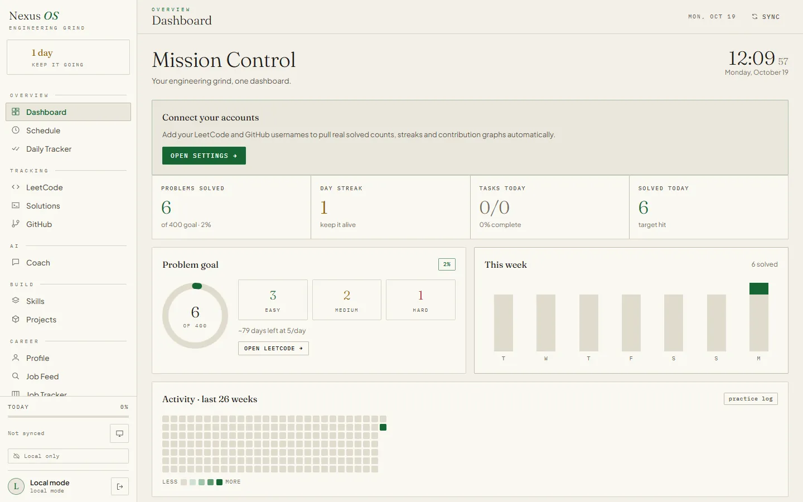
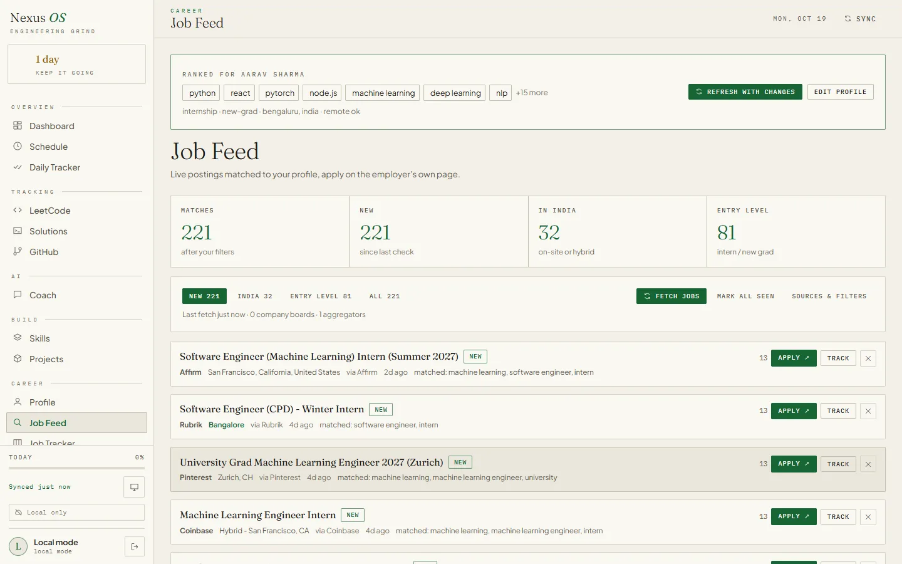
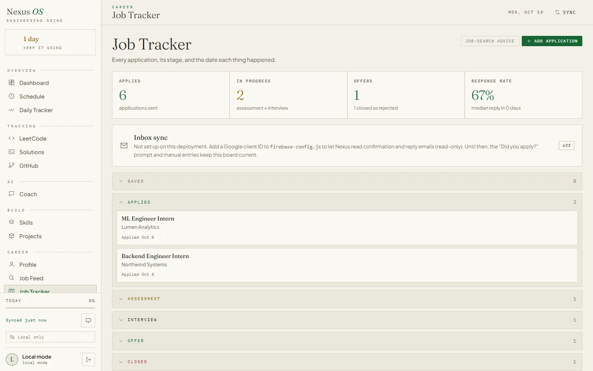
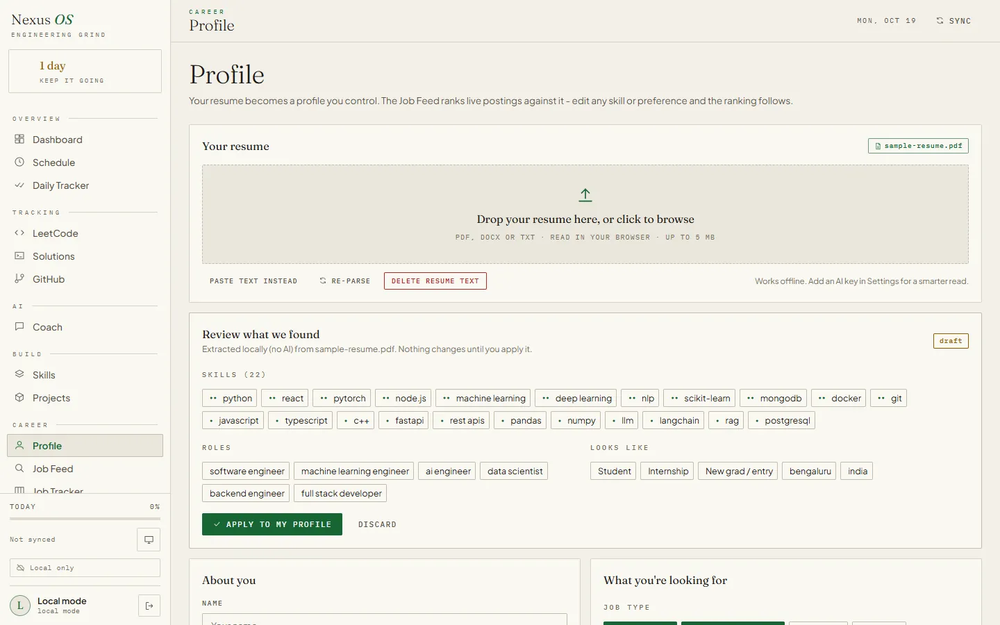

Land the engineering job.
Nexus OS reads your resume, finds roles that fit it, and tracks every application, including the replies that arrive in your inbox. It also logs your LeetCode practice to GitHub while you prepare.

Everything between resume and offer.
One portal for the whole search: find roles, apply, follow up, and keep your skills current.
A job feed ranked against your resume
Upload your resume once. Nexus pulls out your skills and target roles, then ranks live postings from company boards and aggregators against them. Change any skill or job type and the feed follows.
Resume parsing, editable profile
An application pipeline with dates
Saved, applied, assessment, interview, offer. Every application carries a dated timeline, so you can see where things stand and what has gone quiet.
Stage list, per-role timeline
A profile built from your resume
Drop in a PDF and review what was found before anything is applied: skills, roles, level and locations. Each item can be edited or removed, and Nexus uses the result to rank your feed.
PDF parsing, nothing applied until you confirm
Your inbox updates the tracker
Connect Gmail read-only. Nexus spots confirmation, assessment, interview and rejection emails, moves the matching application forward and stamps the date.
LeetCode to GitHub
Accepted solutions are committed to your repository by the browser extension, one commit per solve, so your contribution graph reflects your practice.
A coach that reads your numbers
Ask for a review of the solution you just pushed, or for advice based on your actual application funnel. It needs a Groq key or the shared service.
A daily system you can measure
Schedule blocks, a habit checklist, streaks and analytics, so the routine is something you can look at and adjust.
From sign-up to first reply in four steps.
- 01
Create your account
Sign up with email or Google. Your data is kept under your account.
- 02
Upload your resume
Nexus extracts your skills, roles and level into a profile you can edit line by line.
- 03
Apply from your feed
Apply opens the employer's own page. When you come back, Nexus asks whether you applied and logs it.
- 04
Let replies find you
With Gmail connected, confirmations and responses update the tracker with dates.
Your data, kept narrow.
A job search is personal. Nexus only touches what a feature needs, and says what that is. Read the full privacy policy and terms.
- Your data stays yoursYour tracker, profile and solutions are kept in your browser and synced to a private space in Google Firestore that only your account can read. Your GitHub token and Groq key stay on the device you typed them on and are never synced. Export or delete everything at any time.
- Gmail is read-only and narrowNexus searches for job-related mail and reads only the sender, subject, date and a short snippet. The access token is never saved.
- Your resume is sent only when you askResume text goes to the AI provider only when you press Parse, and nothing is applied to your profile until you confirm it.
- No auto-apply, no job-site passwordsNexus never submits applications for you and never asks for your logins on other sites.
Common questions.
Does Nexus OS apply to jobs for me?
How does an application reach the tracker on its own?
Which email providers are supported?
Do I need my own AI key?
Where is my data stored?
Is it free?
Stop juggling tabs. Start tracking.
Create an account, drop in your resume, and see roles that fit in minutes.